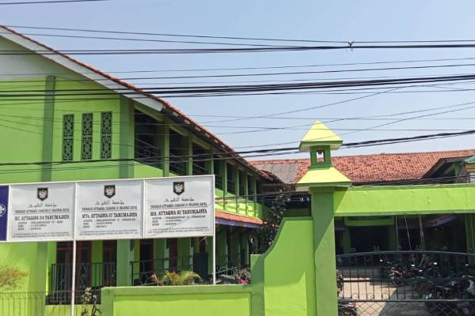

Terwujudnya Siswa Yang Berprestasi, Agamis, Berkarakter, Dan Berwawasan Lingkungan.

MPLS - Sambutan Kepala Madrasah

MPLS - Peserta dan anggota OSIS

MPLS - Upacara Pembukaan

MPLS - Materi lingkungan belajar
Jl. Raya Tarumajaya Kp. Bali Desa Segaramakmur Kecamatan
Tarumajaya Kabupaten Bekasi 17211
Ends On : 01-11-2025